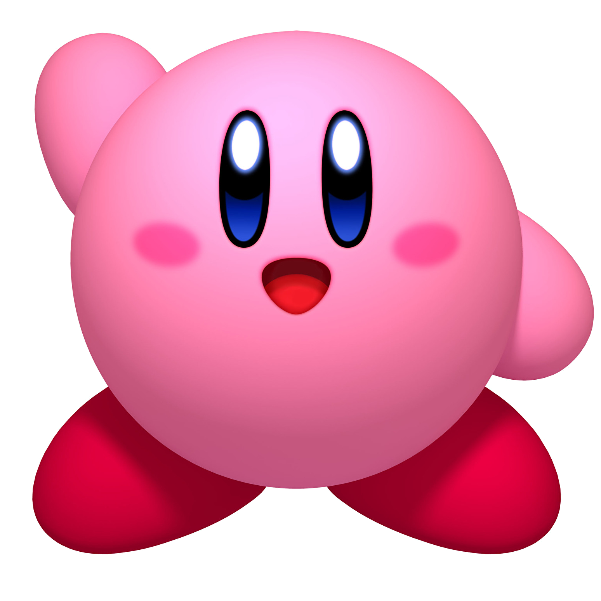
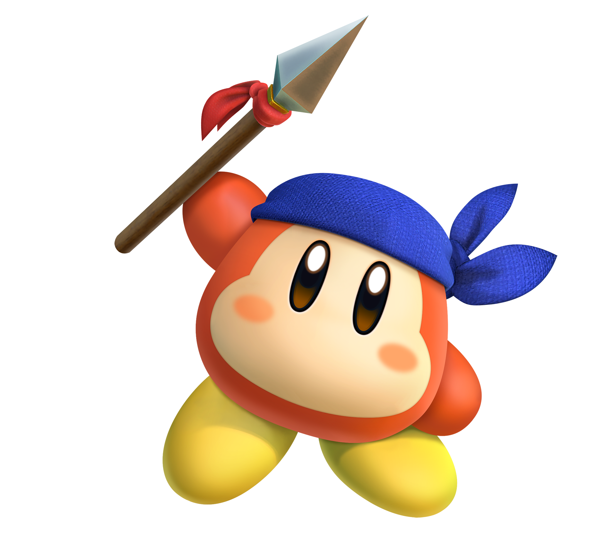
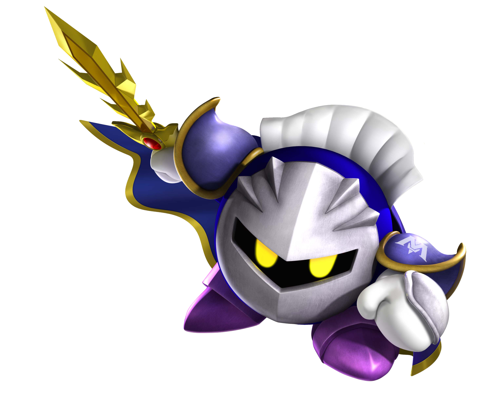

Kirby
Kirby es un personaje de la gran empresa Nintendo y protagonista de una serie de juegos con su mismo nombre. Fue creado por Masahiro Sakurai. Hizo su primera aparición en 1992 en la consola portátil de Game Boy. Desde ese entonces Kirby apareció en diferentes consolas con juegos en 2D hasta que salió Kirby 64: The Crystal Shards, donde se puede apreciar a Kirby en 3D. Kirby también cuenta con una serie de anime: Kirby: Right Back at Ya!, que salió al aire el 6 de octubre de 2001. Es reconocido por su forma redonda y su característico color rosado.

Weedle
Waddle Dee pañuelo es un personaje secundario de la saga Kirby. Originalmente es un enemigo que se hace bueno y acaba volviéndose amigo de Kirby. En Kirby's Return to Dream Land es uno de los personajes opcionales que pueden elegir los jugadores 2, 3 y 4. En Kirby Mass Attack hace una aparición menor, es el sirviente del Rey Dedede. Waddle Dee pañuelo se ha convertido en un personaje importante en la saga de Kirby desde su aparición como personaje jugable de Kirby's Return to Dream Land. Es un valiente, pero a la vez muy alegre guerrero, y es muy hábil con la lanza.

Meta Knight
Sir Meta Knight es un guerrero estelar al igual que Kirby y Galacta Knight. Es uno de los principales personajes de la saga Kirby, ha aparecido en varios de los juegos de la serie y en los capítulos del anime, al igual que Kirby fue creado por Masahiro Sakurai. Debutó en el juego Kirby's Adventure y hasta ahora, su última aparición en juegos de kirby ha sido en Kirby Star Allies y su última aparición en general fue en Super Smash Bros. Ultimate.

Rey Dedede
El Rey Dedede es un personaje ficticio de los videojuegos de Nintendo y una especie de pingüino, apareciendo en la saga de Kirby. No es precisamente un villano, o al menos no uno con ambiciones muy grandes, pero le gusta hacer lo que él quiere sin importarle lo que otros de su reino quieran (como cuando robó la comida de Dream Land para él mismo en Kirby's Dream Land), aunque en momentos de necesidad puede hacer a un lado sus intereses personales para evitar que una catástrofe ocurra (separar la Star Rod para que no la obtengan Nightmare o Dark Matter como en Kirby's Adventure) o para ayudar a Kirby contra un mal mayor (buscar y restaurar el Cristal de Poder para expulsar a Dark Matter de ahí en Kirby 64: The Crystal Shards), su enemistad con Kirby se debe más a que siempre es él quien lo detiene cuando se está "divirtiendo" (casi todos sus planes "malvados" son más para deshacerse de Kirby que para destruir/conquistar el mundo).